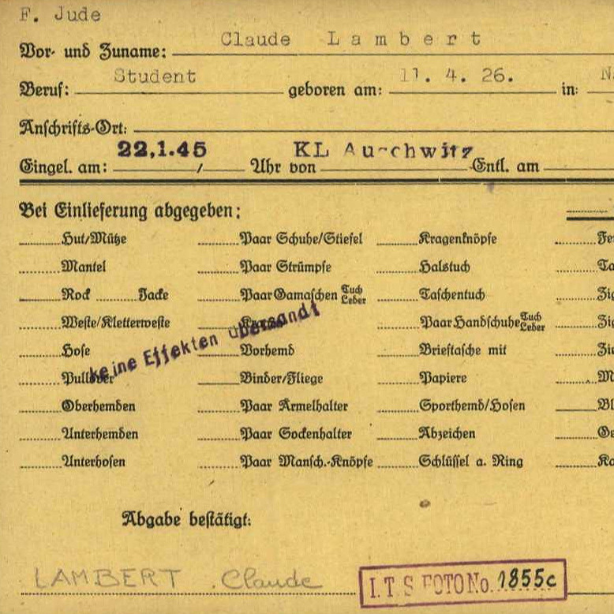

Portrait d’archive
Claude Lambert
Claude LAMBERT
Claude LAMBERT est né le 11/04/1926 à Nancy en France.
Rassemblé à Lyon, il est déporté à Auschwitz le 07/03/1944 par le convoi n°69. Il est mort en déportation.
Déporté seul
Dernière adresse connue : 8, cours Jean Penicaud (Limoges)
Nom : LAMBERT
Prénom(s) : Claude Julien
Date naissance : 11/04/1924
Âge (ans) : 17 ou 19
Lieu naissance : Nancy
Pays ou département : Meurthe et Moselle
Lieu rassemblement : Lyon
Dernière adresse : 8, cours Jean Penicaud ou Gare de Perrache - Lyon
Ville : Limoges ou Lyon
Code postal : 87000
N° Convoi : 69
Date déportation : 07/03/1944
Informations diverses : Fils de Adolphe Lambert, dessinateur (14/10/1879 à Nancy) et de Berthe Bertha née Lévy (30/05/1892 à Luxeuil, Haute Saône). Claude était électricien TSF. Internat de Limoges (OSE). Il est arrêté en gare de Lyon ou dans le train à Montélimar le 01/02/1944 où il se rendait dans un maquis dans la Drôme rejoindre son cousin. Il est interné à Drancy, le 25/02/1944 et déporté seul par le convoi 69 du 07/03/1944. Transféré le 22/01/1945 au camp de Buchenwald puis au commando d’Ohrdruf (Allemagne) où il décède le 02/03/1945. Le capitaine Bailly, médecin chef de l’hôpital international de Gotha, informera le 23/11/1945 sa mère du décès de Claude le 01/03/1945 des suite d’une pneumonie et dysenterie aigüe (Division des Archives des Victimes des Conflits Contemporains, Caen).
Sa mère Berthe sera arrêtée à Nancy au 36, rue Grandville et déportée à Auschwitz par le convoi 71 du 13/04/1944.
Lambert (Claude, Julien), né le 11 avril 1924 à Nancy (Meurthe-et-Moselle), décédé le 1er mars 1945 à Ohrdruf (Allemagne) JO
Lambert, née Levy (Berthe) le 30 mai 1892 à Luxeuil-les-Bains (Haute-Saône), décédée le 18 avril 1944 à Auschwitz (Pologne) et non le 1er juillet 1946 à Auschwitz (Pologne).
Lieu de déportation : Auschwitz
Lieu de départ : Drancy
Nombre total de déporté·e·s du convoi : 1501
Gazé·e·s à l'arrivée : 1311 (87,3 %)
Survivant·e·s en 1945 : 34 (2,3 %)